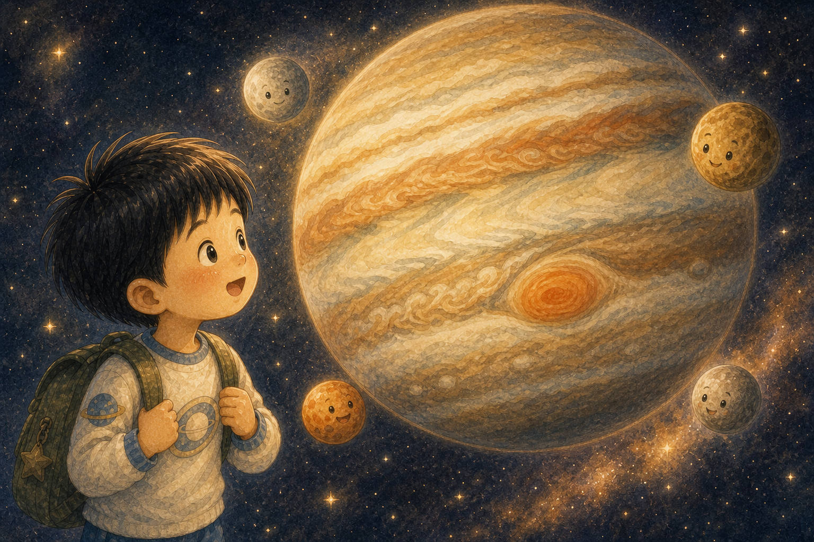
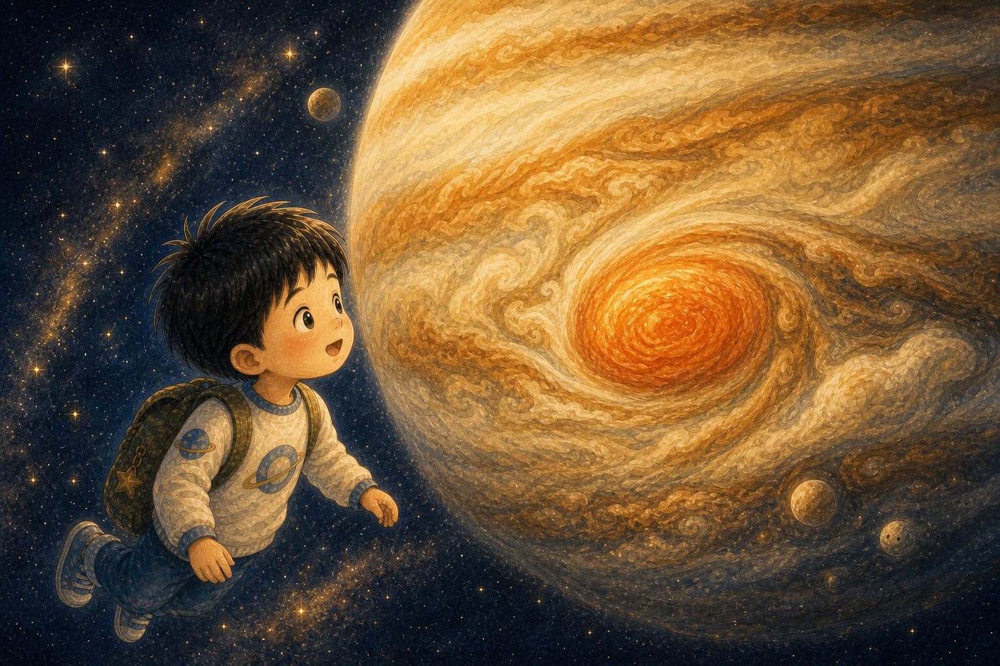
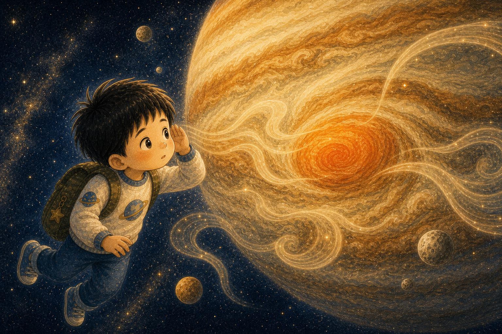
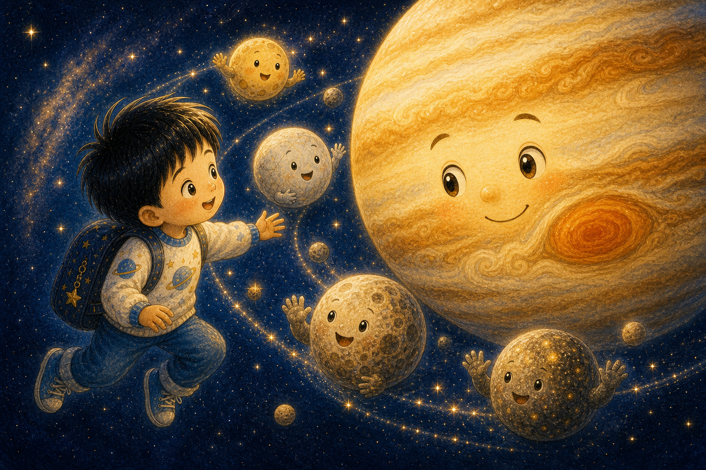
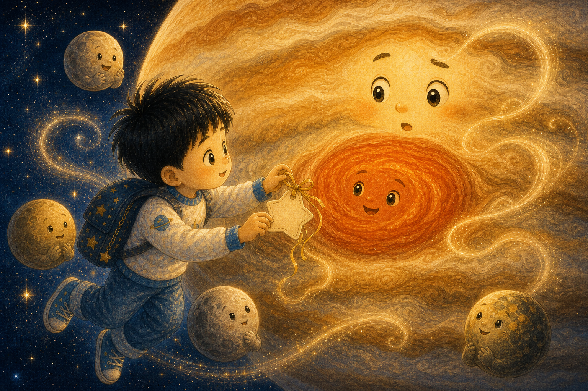
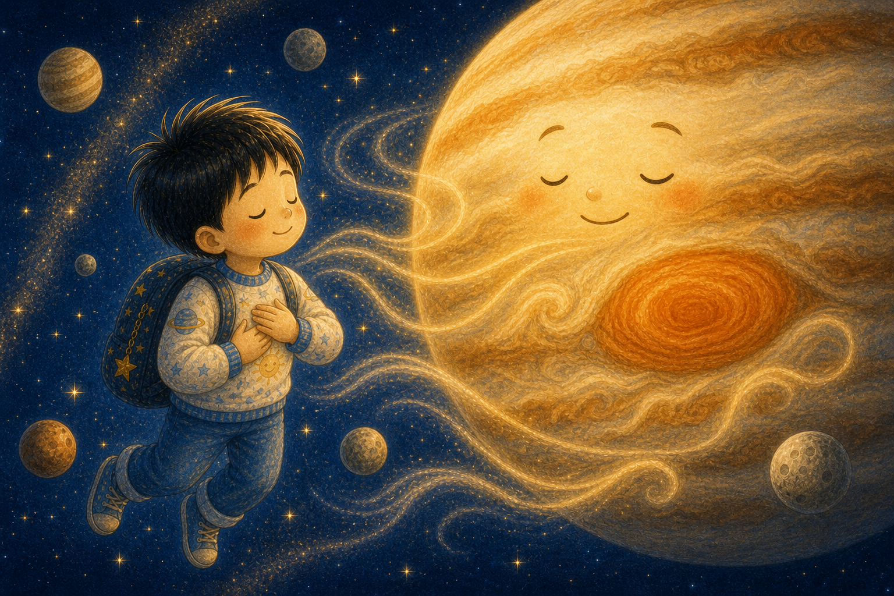
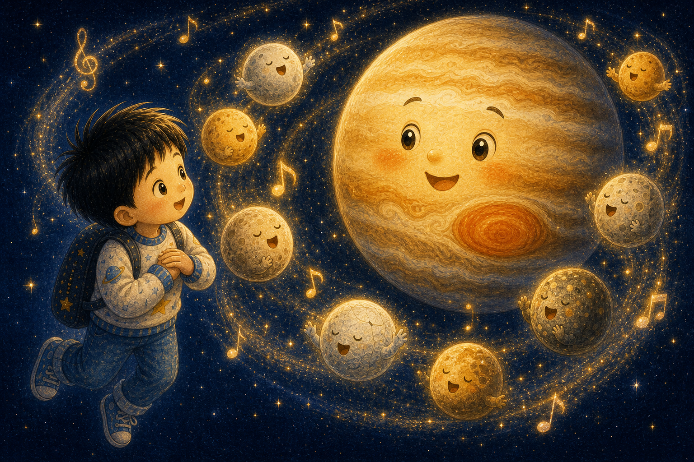
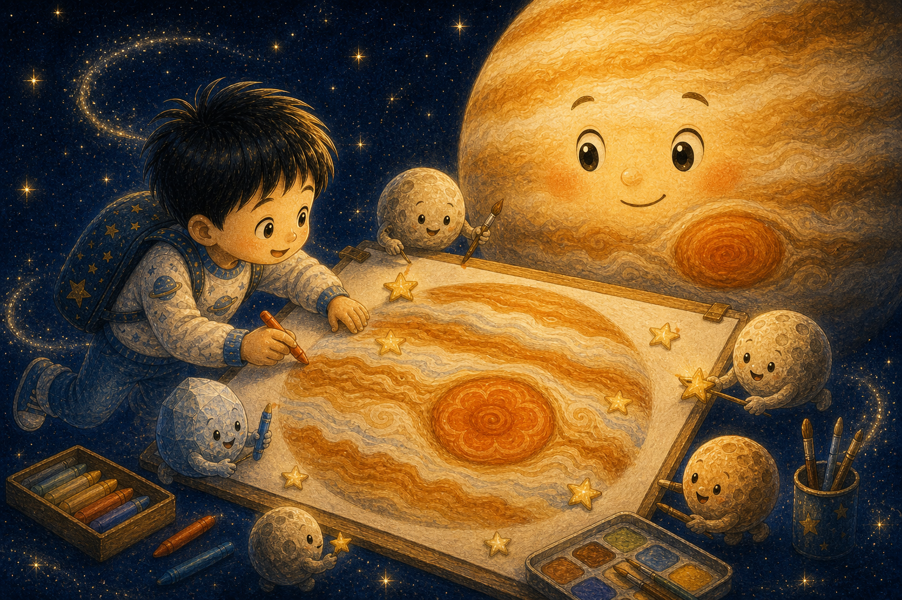
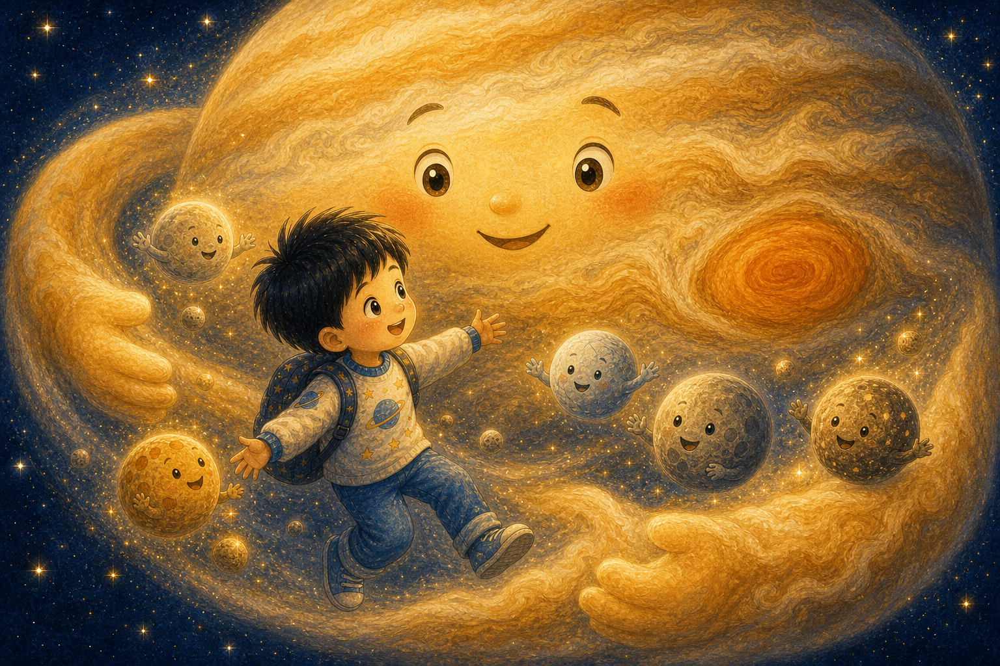
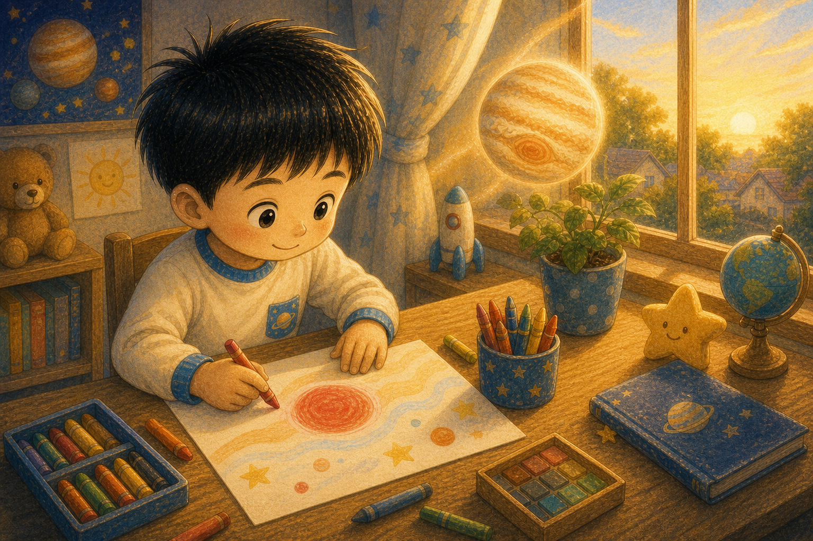

커다란 줄무늬 친구
하늘이는 줄무늬 구름이 빙글도는 목성을 만났어요. 목성은 아주 커서 하늘이가 고개를 한참 들어야 했지요.
"나는 크지만, 너와 친구가 되고 싶어."

하늘이는 줄무늬 구름이 빙글도는 목성을 만났어요. 목성은 아주 커서 하늘이가 고개를 한참 들어야 했지요.
"나는 크지만, 너와 친구가 되고 싶어."

목성 얼굴에는 커다란 빨간 점이 있었어요. 하늘이는 그곳에서 오래된 폭풍이 돌고 있다는 이야기를 들었답니다.
크고 센 친구도 사나운 마음이 들 때가 있어요.

빨간 점 가까이에서 바람이 우르릉 소리를 냈어요. 하늘이는 조금 무서웠지만 목성의 손을 꼭 잡았지요.
무서울 때는 손을 잡아도 괜찮아요.

목성 곁에는 달 친구들이 많이 있었어요. 이오, 유로파, 가니메데, 칼리스토가 하늘이에게 반짝 인사했답니다.
목성은 많은 친구를 품고 있었어요.

하늘이는 목성에게 말했어요. "빨간 점을 오래된 바람 친구라고 불러 보면 어때?" 목성은 천천히 따라 말했지요.
이름을 붙이면 마음을 바라보기 쉬워져요.

목성과 하늘이는 하나, 둘, 셋 하고 큰 숨을 쉬었어요. 빨간 점은 사라지지 않았지만 소리가 조금 부드러워졌답니다.
숨은 마음을 천천히 흔들어 주었어요.

달 친구들이 작은 노래를 불렀어요. "목성아, 네 바람도 네 마음의 한 부분이야." 목성은 눈을 반짝였지요.
친구의 노래가 큰 마음을 안아 주었어요.

하늘이는 목성의 구름 줄무늬를 따라 그림을 그렸어요. 빨간 점도 그림 속에서 둥근 꽃처럼 보였답니다.
다르게 보면 무서운 것도 새로운 모습이 돼요.

목성은 달 친구들과 하늘이를 넓은 구름 품으로 감싸 주었어요. 폭풍이 있어도 따뜻한 품은 그대로였지요.
큰 마음은 흔들림까지 품을 수 있어요.

아침에 깬 하늘이는 속상한 마음을 빨간 점으로 그렸어요. 그리고 그 옆에 "괜찮아, 내 마음이야"라고 썼답니다.
목성은 하늘이에게 마음을 다루는 법을 알려 주었어요.